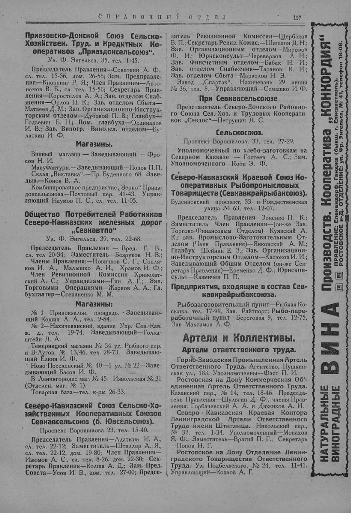

Лист источника 177
Скан

Распознанный текст
СПРАВОЧНЫЙ ОТДЕЛ 127
Приазовско-Донской Союз Сельско-
Хозяйствен. Труд. и Кредитных Ко-
оперативов „Приаздонсельсоюз“.
Ул. Ф. Энгельса, 35, тел. 1-45.
Председатель Правления—Советкин А. Ф.,
сл. тел. 15-56, дом. 26-56; Зам. Предправле-
ния—Кноппинг Р. Я.; Член Правления—Авто-
номов В. Б., сл. тел. 15-56; Секретарь Прав-
ления—Коростелев А. А.; Зав. отделом Снаб-
жения—Орлов Н. К.; Зав. отделом Сбыта—
Матвеев Д. М.; Зав. Организационно-Инструк-
торским отделом—Дубовой П. В.; Главбух—
Годзевич Б. Н.; Пом. главбуха—Ординаров
И. В.; Зав. Виногр. Винодел. отделом—Бу-
латкин И. Ф.
Магазины.
Винный магазин — Заведывающий — Фро-
сов Н. И.
Мануфактурн.—Заведывающий—Попов П. П.
Склад „Выставка“.—Пр. Буденного 68. Заве-
дыв.—Конов В. А.
Комбинированное предприятие „Зерно“ Приаз-
донсельсоюза—Почтовый пер. 41-43. Управ-
ляющий Наумов П. С., сл. тел. 11-05.
Общество Потребителей Работников
Северо-Кавказских железных дорог
„Севкавтпо“
Ул. Ф. Энгельса, 39, тел. 22-68.
Председатель Правления — Вред. Г. В.,
сл. тел 20-34; Заместитель—Безруков Н. В.;
Члены Правления:—Новичков С. Г., Сопля-
ков И. А., Малышко А. И., Храмов И. Ф.;
Член Ревизионной Комиссии—Кривохат-
ский А. С.; Управделами—Гин А. Г.; Зав.
Торговыми Операциями—Жарков А. А.; Гл.
бухгалтер—Степаненко М. М.
Магазины:
№ 1—Привокзальн. площадь. Заведываю-
щий Кошич Л. А., тел. 2-84.
№ 2—Нахичеванский, здание Упр. Сев.-Кав.
ж. д., тел. 19-74. Заведывающий—Гольд-
штейн Д. А.
Темерницкий магазин № 34 уг. Рыбного пер.
и В-Лугов. № 13/46, тел. 28-73. Заведываю-
щий Елкин И. Ф.
Ново-Поселенский № 40—6 ул. № 22—Заве-
дывающий Басов И. Ф.
В Ленингородке маг. № 45—Извольская № 31
(Отделен. маг. № 1).
Товарная база—тел. к-ры 26-33.
Северо-Кавказский Союз Сельско-Хо-
зяйственных Кооперативных Союзов
Севкавсельсоюз (б. Ювсельсоюз).
Проспект Ворошилова 23, тел. 15-40.
Председатель Правления—Адатынь И. А.,
сл. тел. 22-12; Заместитель—Штиллер А. Я.,
сл. тел. 22-12, дом. 19-80; Член Правления—
Изюмов А. С., сл. тел. 8-26, дом. 22-30; Сек-
ретарь Правления—Колша А. Д.; Зам. Пред.
Совета—Усов И. В., дом. тел. 27-00; Предсе-
датель Ревизионной Комиссии—Щербаков
В. П.; Секретарь Ревиз. Комис.—Шипшин Д. Н.;
Зав. Организационным отделом—Миронов
Ф. И.; Юрисконсульт—Череверзов Л. Н.;
Зав. Финсчетным отделом—Бабак Н. И.;
Зав. отделом Снабжения—Таранов К. И.;
Зав. отделом Сбыта—Маркелов Н. З.
Завод „Спартак“. Нахичевань 29 линия
№ 36, тел. 8.—Управляющий—Семашко И. Ф.
При Севкавсельсоюзе
Представитель Северо-Донского Районно-
го Союза Сел.-Хоз. и Трудовых Кооперати-
вов „Севдос“—Петрушин Д. С.
Сельскосоюз.
Проспект Ворошилова, 33, тел. 27-29.
Уполномоченный по хлебо-заготовкам на
Северном Кавказе — Гостеев А. С.; Зам.
Уполномоченного—Коби Э. Ф.
Северо-Кавказский Краевой Союз Ко-
оперативных Рыбопромысловых
Товариществ (Севкавкрайрыбаксоюз).
Буденновский проспект, 33 и Рождественская
улица № 63, тел. 12-07.
Председатель Правления—Зоненко П. К.;
Заместитель Член Правления—(он-же Зав.
Торгово-Финансовым Отделом)—Куявский А.
К.; зав. Промыслово-Заготовительным От-
делом (Член Правления)—Янковский А. М.;
Главбух—Шейнин Е. З.; Зав. Организацион-
но-Инструкторским Отделом—Касюков И. И.;
Заведывающий Общим Отделом (он-же Сек-
ретарь Правления)—Еременко Д. Ф.; Юрискон-
сульт—Казмичев П. П.
Предприятия, входящие в состав Сев-
кавкрайрыбаксоюза.
Рыбозаготовительный пункт—Рыбная Ко-
сынка, тел. 17-99, Зав. Райтпорт; Рыбо-пере-
работочный пункт—Береговая 9, тел. 12-75,
Зав Максимов Л. Ф.
Артели и Коллективы.
Артели ответственного труда.
Горно-Заводская Промышленная Артель
Ответственного Труда. Агентство, Пушкин-
ская ул., 183. Уполномоченны—Фаст П. И.
Ростовская на Дону Коммерческая Об'-
единенная Артель Ответственного Труда.
Казанский пер., № 14, тел. 18-46. Председа-
тель Правления—Шульгин Д. Ф., члены Прав-
ления: Горбачевский А. А. и Дюжиков А. И.
Северо - Кавказская Краевая Контора
Ленинградской Артели Ответственного
Труда имени Штиглица. Никольский пер.,
№ 32, тел. 1-34. Уполномоченный—Монахов
Я. Ф., Заместитель—Врагий П. Г., Секретарь
—Попов Н. Г.
Ростовское на Дону Отделение Ленин-
градского Товарищества Ответственного
Труда. Ул. Подбельского, № 24, тел. 11-41.
Управляющий—Козлов А. Г.
НАТУРАЛЬНЫЕ ВИНОГРАДНЫЕ ВИНА Производств. Кооператива „КОНКОРДИЯ“
ПРАВЛЕНИЕ: Еленендорф, Ганджа (бывш. г. Елисаветполь).
РОСТОВСКОЕ н-Д. ОТДЕЛЕНИЕ: ул. Фр. Энгельса, № 41, телефон 18-08.